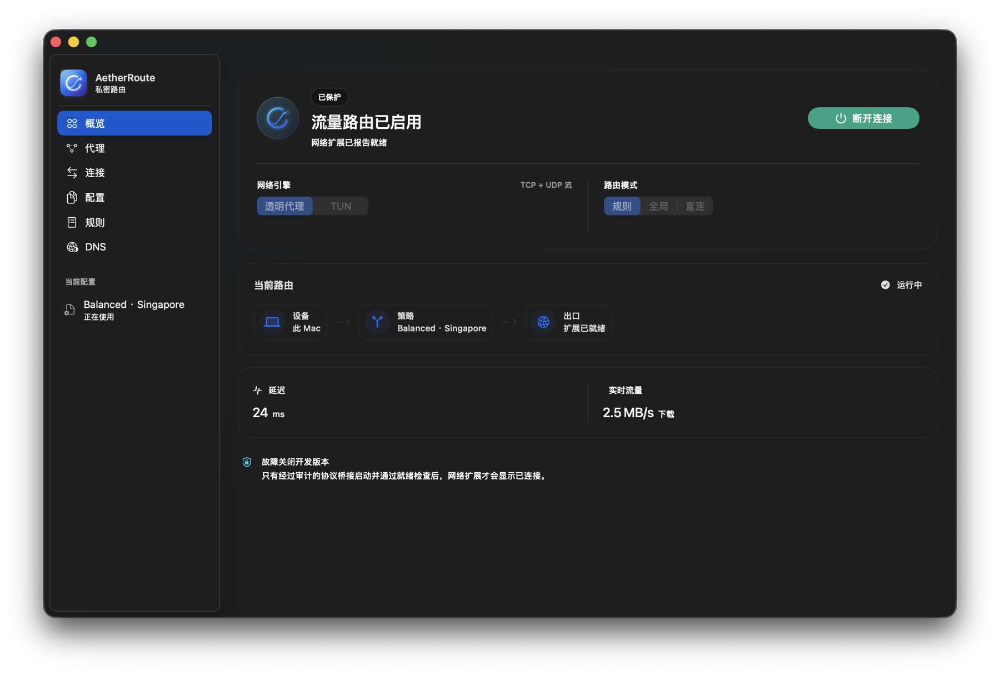

熟悉的 Mac 体验
原生界面，清晰的连接状态。
打开就知道，该从哪里开始。
为你的 Mac，多想一点。
一款为 macOS 而生的网络代理工具。
日常连接简单，精细控制也从容。
Apple 芯片 · macOS 15 及以上 · 自备订阅或节点

少一点折腾，多一点自在
原生界面，清晰的连接状态。
打开就知道，该从哪里开始。
导入订阅、配置或单个节点。
已有的连接习惯，在这里继续。
选择节点，查看连接，调整规则。
简单的界面，也容得下专业需求。
提供透明代理与 TUN 两种网络引擎，以及规则、全局和直连模式。根据实际使用场景选择。
支持订阅 URL、本地配置和单个节点导入。协议包括 VLESS、VMess、Hysteria2、Trojan、Shadowsocks 等；具体兼容情况请查看版本说明。
查看实时连接、流量与分流信息，配合节点测速和规则管理，让调整有据可依。
准备一台运行 macOS 15 或更高版本的 Apple 芯片 Mac，以及你自己的订阅或节点。安装后导入配置，按系统提示批准网络扩展，再连接。
客户端免费使用，无需付费激活。软件不提供节点或订阅服务，需要自行准备。
AETHERROUTE FOR MAC
免费使用 · 为 Apple 芯片 Mac 打造